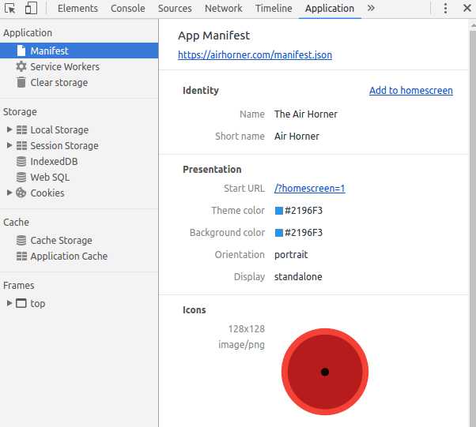
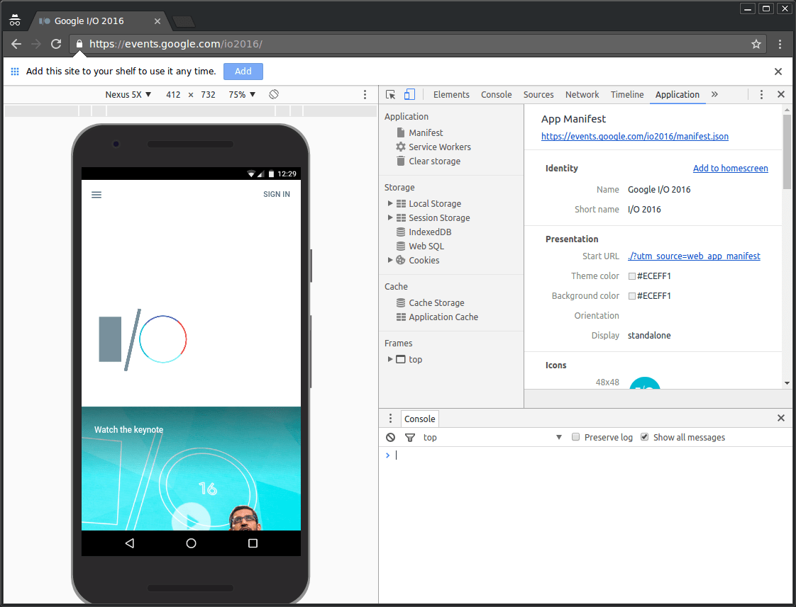
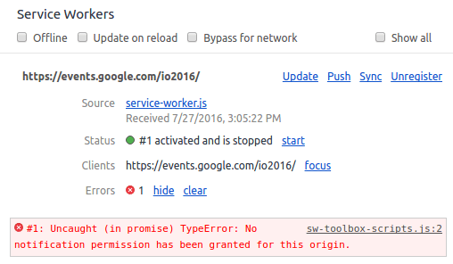
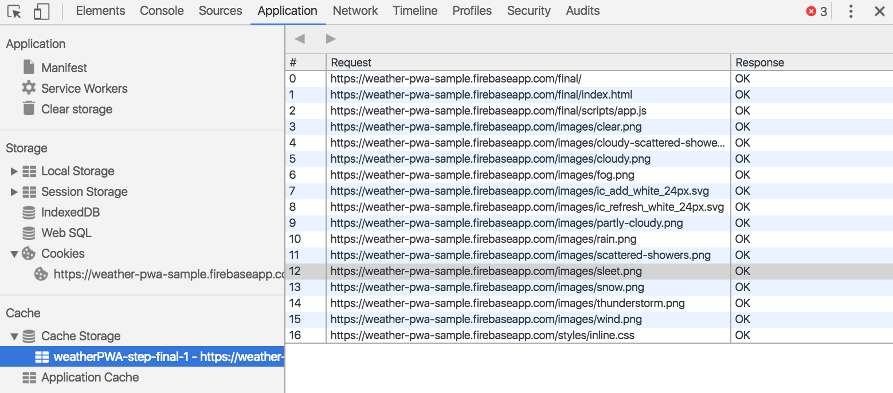
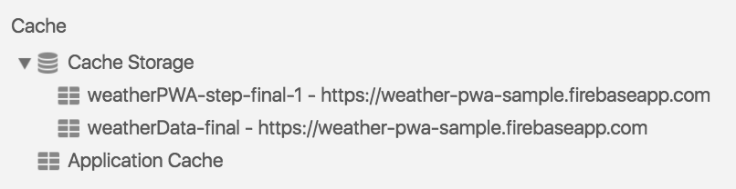

调试 Progressive Web App
使用 Application 面板检查、修改和调试网络应用清单、服务工作线程和服务工作线程缓存。
相关指南:
本指南仅讨论 Application 面板的 Progressive Web App 功能。 如果您希望获得其他窗格的帮助，请参阅本指南的最后一部分，即其他 Application 面板指南。
摘要
- 使用 App Manifest 窗格检查您的网络应用清单和触发 Add to Homescreen 事件。
- 使用 Service Worker 窗格执行与服务工作线程相关的全部任务，例如注销或更新服务、模拟推送事件、切换为离线状态，或者停止服务工作线程。
- 从 Cache Storage 窗格查看您的服务工作线程缓存。
- 从 Clear Storage 窗格中点击一次按钮，注销服务工作线程并清除所有存储与缓存。
网络应用清单
如果您希望用户能够将您的应用添加到他们移动设备的主屏幕上，那么您需要一个网络应用清单。 清单定义应用在主屏幕上的外观、从主屏幕启动时将用户定向到何处，以及应用在启动时的外观。
相关指南:
设置好清单后，您可以使用 Application 面板的 Manifest 窗格对其进行检查。

- 要查看清单来源，请点击 App Manifest 标签下方的链接（上方屏幕截图中的 https://airhorner.com/manifest.json）。
- 按 Add to homescreen 按钮模拟 Add to Homescreen 事件。 如需了解详细信息，请参阅下一部分。
- Identity 和 Presentation 部分以一种对用户更加友好的方式显示了清单来源中的字段。
- Icons 部分显示了您已指定的每一个图标。
模拟 Add to Homescreen 事件
只有至少已经访问网站两次、访问至少间隔五分钟时才可以将网络应用添加到主屏幕上。 开发或调试您的 Add to Homescreen 工作流时，此条件非常不便。利用 App Manifest 窗格上的 Add to homescreen 按钮，您可以随时模拟 Add to Homescreen 事件。
您可以使用 Google I/O 2016 Progressive Web App 测试此功能，该应用可以为 Add to Homescreen 提供相应支持。在应用打开时点击 Add to Homescreen 会提示 Chrome 显示“add this site to your shelf”横幅（桌面设备），而在移动设备上则会显示“add to homescreen”横幅。

提示: 在模拟 Add to Homescreen 事件时请保持 Console 抽屉式导航栏处于打开状态。 Console 会告诉您清单是否存在任何问题，并记录与 Add to Homescreen 生命周期有关的其他信息。
Add to Homescreen 功能还不能模拟移动设备的工作流。 注意“add to shelf”提示在上方屏幕截图中的触发方式（即使 DevTools 处于 Device Mode）。 不过，如果您可以将应用成功添加到桌面设备文件架，那么在移动设备上也可以获得成功。
如果您希望测试真实的移动体验，则可以通过远程调试将一台真实的移动设备连接到 DevTools，然后点击 DevTools 上的 Add to Homescreen 按钮，在连接的移动设备上触发“add to homescreen”提示。
服务工作线程
服务工作线程是未来网络平台中的一种基础技术。它们是浏览器独立于网页在后台运行的脚本。这些脚本使您可以访问不需要网页或用户交互的功能，例如推送通知、后台同步和离线体验。
相关指南:
Application 面板中的 Service Workers 窗格是在 DevTools 中检查和调试服务工作线程的主要地方。

- 如果服务工作线程已安装到当前打开的页面上，您会看到它将列示在此窗格中。 例如，在上方的屏幕截图中，https://events.google.com/io2016/ 的作用域内安装了一个服务工作线程。
- Offline 复选框可以将 DevTools 切换至离线模式。它等同于 Network 窗格中的离线模式，或者 Command Menu 中的 Go offline 选项。
- Update on reload 复选框可以强制服务工作线程在每次页面加载时更新。
- Bypass for network 复选框可以绕过服务工作线程并强制浏览器转至网络寻找请求的资源。
- Update 按钮可以对指定的服务工作线程执行一次性更新。
- Push 按钮可以在没有负载的情况下模拟推送通知（也称为操作消息）。
- Sync 按钮可以模拟后台同步事件。
- Unregister 按钮可以注销指定的服务工作线程。参阅清除存储，了解点击一次按钮即可注销服务工作线程并擦除存储和缓存的方式。
- Source 行可以告诉您当前正在运行的服务工作线程的安装时间。 链接是服务工作线程源文件的名称。点击链接会将您定向至服务工作线程来源。
- Status 行可以告诉您服务工作线程的状态。此行上的数字（上方屏幕截图中的 #1）指示服务工作线程已被更新的次数。如果启用 update on reload 复选框，您会注意到每次页面加载时此数字都会增大。在状态旁边，您将看到 start 按钮（如果服务工作线程已停止）或 stop 按钮（如果服务工作线程正在运行）。服务工作线程设计为可由浏览器随时停止和启动。 使用 stop 按钮明确停止服务工作线程可以模拟这一点。停止服务工作线程是测试服务工作线程再次重新启动时的代码行为方式的绝佳方法。它通常可以揭示由于对持续全局状态的不完善假设而引发的错误。
- Clients 行可以告诉您服务工作线程作用域的原点。 如果您已启用 show all 复选框，focus 按钮将非常实用。 在此复选框启用时，系统会列出所有注册的服务工作线程。 如果您点击正在不同标签中运行的服务工作线程旁的 focus 按钮，Chrome 会聚焦到该标签。
如果服务工作线程导致任何错误，将显示一个名为 Errors 的新标签。

服务工作线程缓存
Cache Storage 窗格提供了一个已使用（服务工作线程）Cache API 缓存的只读资源列表。

请注意，第一次打开缓存并向其添加资源时，DevTools 可能检测不到更改。 重新加载页面后，您应当可以看到缓存。
如果您打开了两个或多个缓存，您将看到它们列在 Cache Storage 下拉菜单下方。

清除存储
开发 Progressive Web App 时，Clear Storage 窗格是一个非常实用的功能。 利用此窗格，只需点击一次按钮即可注销服务工作线程并清除所有缓存与存储。 参阅下面的部分了解详情。
相关指南:
其他 Application 面板指南
参阅下面的部分，获取有关 Application 面板其他窗格的更多帮助。
相关指南: